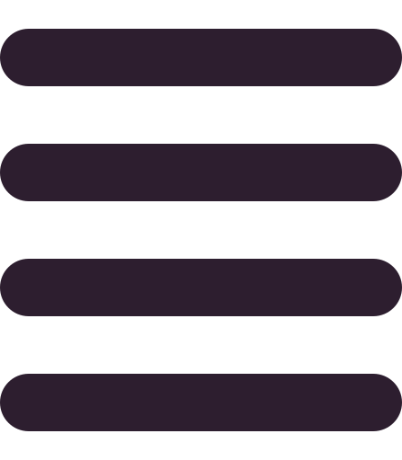

<header>
  <div class="inner-container">
    <div class="social-links">
      <a href="https://github.com/red1code" target="_blank">
        
      </a>
      <a href="https://www.linkedin.com/in/redouane-bekkouche/" target="_blank">
        
      </a>
      <a href="https://twitter.com/red1dev" target="_blank">
        
      </a>
    </div>
    <nav id="desktopMenu">
      <ul>
        <li>
          <a routerLink="" routerLinkActive="active" [routerLinkActiveOptions]="{exact: true}">
            Home
          </a>
        </li>
        <li>
          <a routerLink="portfolio" routerLinkActive="active" [routerLinkActiveOptions]="{exact: true}">
            Portfolio
          </a>
        </li>
      </ul>
    </nav>
    <button type="button" id="toggleMenuBtn" (click)="showMobileMenu=!showMobileMenu">
      @if (showMobileMenu) {
        
      }
      @else if (!showMobileMenu) {
        
      }
    </button>
  </div>
</header>

<nav id="mobileMenu" class="hide-mobile-menu" 
    [ngClass]="{'show-mobile-menu': this.showMobileMenu, 'hide-mobile-menu': !this.showMobileMenu}">
  <ul>
    <li>
      <a routerLink="/" routerLinkActive="active" [routerLinkActiveOptions]="{exact: true}">
        Home
      </a>
    </li>
    <li>
      <a routerLink="portfolio" routerLinkActive="active" [routerLinkActiveOptions]="{exact: true}">
        Portfolio
      </a>
    </li>
  </ul>
</nav>


<!-- <mat-sidenav-container class="sidenav-container">
  <mat-sidenav #drawer class="sidenav" fixedInViewport
        [attr.role]="(isHandset$ | async) ? 'dialog' : 'navigation'"
        [mode]="'over'"
        [opened]="false">
      <button
          type="button"
          mat-icon-button
          (click)="drawer.toggle()">
        <mat-icon>menu</mat-icon>
      </button>
    <mat-nav-list>
      <a mat-list-item routerLink="/#hero" routerLinkActive="active">Home</a>
      <a mat-list-item routerLink="/portfolio" routerLinkActive="active">Portfolio</a>
    </mat-nav-list>
  </mat-sidenav>

  <mat-sidenav-content>
    <mat-toolbar class="main-hdr mat-elevation-z8" color="primary">
      <div class="inner-container">
        @if (isHandset$ | async) {
          <button
            type="button"
            aria-label="Toggle sidenav"
            mat-icon-button
            (click)="drawer.toggle()">
            <mat-icon aria-label="Side nav toggle icon">menu</mat-icon>
          </button>
        }
        <span>Red1Dev</span>
        @if (!(isHandset$ | async)) {
          <nav>
            <a routerLink="/">Home</a>
            <a routerLink="/portfolio">Portfolio</a>
          </nav>
        }
      </div>
    </mat-toolbar>
  </mat-sidenav-content>
</mat-sidenav-container> -->
